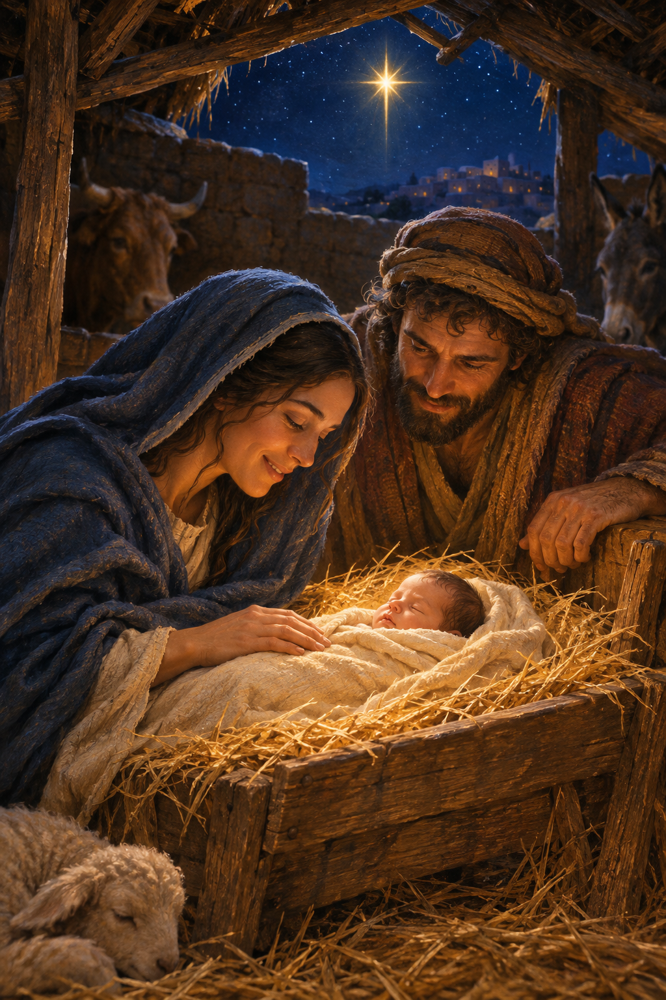

The Birth of Jesus Christ
🕰️ Revised: Nov 2026
“The people walking in darkness have seen a great light; on those living in the land of deep darkness a light has dawned.” — Isaiah 9:2 (NIV)
The world was quiet that night — or so it may have seemed. Rome ruled Judea, and many in Israel longed for deliverance. Yet the promises of God still carried hope. Heaven was already stirring. Stars had listened for the command. The moment had come for the Word to become flesh.
The Journey to Bethlehem
In Nazareth, a young woman named Mary carried a promise too great for human words. Beside her was Joseph, faithful and steady, as they traveled to Bethlehem. Luke connects their journey with Caesar Augustus’s census; Micah had spoken of Bethlehem as the place from which a ruler for Israel would come.
“But you, Bethlehem Ephrathah, though you are small among the clans of Judah, out of you will come for me one who will be ruler over Israel…” — Micah 5:2 (NIV)
Each step on that rocky path was guided by unseen hands. Heaven watched as the Savior of the world drew nearer to His appointed birthplace. (Luke 2:1–5)
No Room, Yet Perfectly Placed
Luke says there was no guest room available and that Mary laid Jesus in a manger (Luke 2:7, NIV). The Gospels don’t name a stable or describe animals there; those familiar details belong to the Nativity tradition. Still, the manger is the detail that holds this scene: the King comes in humility.
“Behold, the virgin shall conceive and bear a Son, and shall call His name Immanuel.” — Isaiah 7:14 (NKJV)
The Creator stepped into His own creation — Heaven touched Earth. Mary wrapped Him in cloths and laid Him in a manger. The Light Isaiah had described had now come into the world.
The Shepherds Hear the News
That night, shepherds were keeping watch over their flocks nearby. Luke tells us that an angel announced the birth of a Savior, and a heavenly host praised God. Their news was for all people: the promised Light had come.
“Do not be afraid. I bring you good news that will cause great joy for all the people. Today in the town of David a Savior has been born to you; he is the Messiah, the Lord.” — Luke 2:10–11 (NIV)
“Glory to God in the highest heaven, and on earth peace to those on whom his favor rests.” — Luke 2:14 (NIV)

The Magi and His Star
Matthew gives us a separate scene. Magi from the east came to Jerusalem seeking the child who had been born King of the Jews (Matthew 2:1–2, NIV). They had seen His star and had come to honor Him. Matthew does not place them at the manger or say they arrived on the night of the birth.
When the star led them to the child, they entered a house and saw Him with Mary, His mother. They knelt and offered gifts of gold, frankincense, and myrrh (Matthew 2:9–11, NIV). The star was not born of chance in the Christian telling; it was appointed by God to lead seekers to the true King.
The Light Has Come
When the Magi finally arrived, they knelt before the child, their treasures small beside the wonder of His presence. This was a sign of hope for every longing heart. The cradle and the cross were not far apart — even in this early chapter of His earthly life, redemption was already unfolding.
Reflection
The same Light that rose over Bethlehem still shines through every shadow today. He wasn’t just born into the world; He was born for the world — for you, for me, for every soul who would seek Him. When you look up at the night sky this season, remember: the star that once guided wise men still points to the same truth — The Light has come, and darkness will never overcome it.